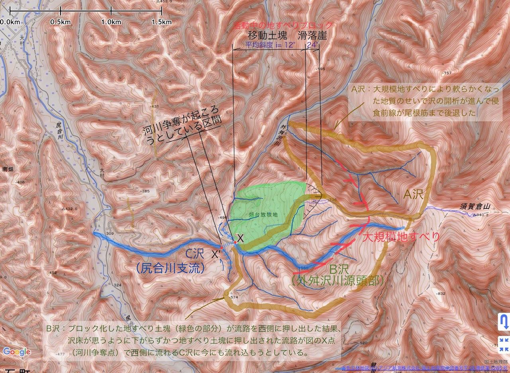
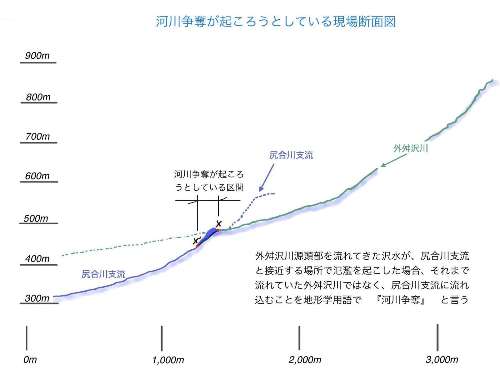
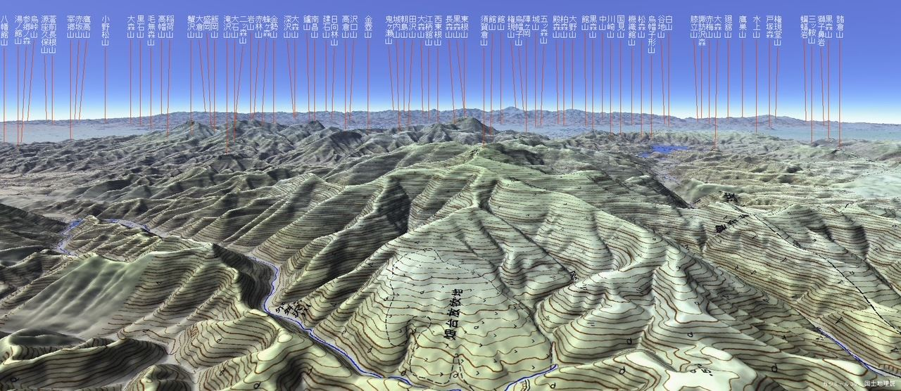

川は、水が低いほうへ流れていくだけのもの。たいていはそう思って見ています。ところが川は、となりの川から水を奪うことがあります。「河川争奪（かせんそうだつ）」と呼ばれる現象です。遠い昔の話ではありません。条件がそろえば、ひと晩の豪雨で起こります。
河川争奪とは
谷をどんどん深く削っていく川が、となりの谷の壁を削り切ってしまうと、向こう側を流れていた水が、こちら側へ流れ込むようになります。奪ったほうの川は水量が増え、奪われたほうの川は水を失います。
水を失ったほうの川は、谷だけが残って水が流れない状態になります。首を切られたように見えることから、斬首河川（ざんしゅかせん）と呼ばれます。そして流れの向きが急に変わる地点は、ひじを曲げた形に似ているので争奪の肘（ひじ）といいます。
ここまでが教科書の説明です。でも「削り切る」までにどれくらいかかるのか、何がきっかけで起こるのかは、言葉だけではつかみにくいところです。そこで、実際に起こりうる場所を一つ取り上げて、順を追って見ていきます。
現場は、須賀倉山のふもと
舞台は紫波町、須賀倉山（すがくらやま）の西に広がる山中です。畑台放牧地のあたりで、ふたつの沢が危ういほど近づいています。

赤色立体地図 ©アジア航測株式会社／国土地理院承認番号 平28情使第1285号
この図には、争奪が起こりやすい理由が書き込まれています。
- A沢｜大規模な地すべりで地質が軟らかくなったため、沢を削る力が強く働き、侵食の最前線が尾根筋まで後退しています
- B沢（外舛沢川の源頭）｜ブロックになった地すべり土塊（図の緑色）が流路を西へ押し出しました。その結果、沢床が思うように下がらないまま、押し出された流れがX点でC沢に合流しそうになっています
つまり地すべりが川を押しているのです。川が自分で谷を削って近づいたのではなく、土の塊に横から押されて、となりの沢にすり寄らされている。これがこの場所の特徴です。
高さの差を、断面で見る
平面図だけでは、どれだけ危ういかが分かりません。縦に切った断面図を見ると、事情がはっきりします。

緑の線（外舛沢川）と青の線（尻合川支流）が、X点のあたりでぐっと近づいているのが分かります。けれども高さが違う。尻合川支流のほうが、約40mも低いのです。
水から見れば、すぐ隣に「もっと低い道」がある状態です。あいだを仕切っているのは、わずかな高まりだけ。この均衡が崩れたとき、何が起こるか。
上から、地形を見渡す

画像：国土地理院
こうして俯瞰すると、放牧地がまわりの尾根に囲まれた、ゆるやかな斜面の上にのっていることが見てとれます。この緩い土の塊が、ゆっくりと沢を押している現場です。
動かして見る
ここまでの条件がそろった場所で、豪雨が降ったらどうなるか。模式アニメーションにしました。左が平面、下が縦断面です。再生ボタンで5つの段階が進みます。段階をクリックすれば、その場面だけを見ることもできます。
5つの段階
- 平常時放牧地の土の塊は緩んでいますが、ふだん水は地面の下を流れています。B沢は土塊の南の縁を西へ流れ、X点で北へ向きを変えて外舛沢川になります。
- 豪雨で水が地表に現れる大雨が降ると、地中を流れていた水が地表に出てきます。道路を流れ下った水もX点へ集まり、緩んだ土塊の末端が削られはじめます。
- 土砂だまりができる集まった水が表土を剥ぎ取り、流れ出た土砂がB沢の流路をふさぎます。行き場を失った水は、土砂だまりの上流側にたまっていきます。
- 越流して短絡水位が鞍部の高さに達すると、水は鞍部を越えます。X点からX′点へ、近道の流れができます。X′点は約40m低いので、流れは急斜面を一気に下り、水路を削って深くしていきます。
- 争奪が成立B沢の水はすべてC沢へ移り、外舛沢川の下流側は水を失います。落差を得たC沢の侵食は、川を逆のぼるように上流へ進んでいきます。X点は「争奪の肘」になりました。
もう、もとには戻らない
この話でいちばん面白いのは、最後の一文かもしれません。
雨がやんでも、川はもとに戻りません。新しい流路が一度深くなってしまえば、水はますますそちらへ流れやすくなるからです。土砂だまりがいずれ流されたとしても、水面はもう古い流路より下にある。引き返す理由がないのです。
きっかけはひと晩の豪雨でも、結果は後戻りしません。地形とは、こうした「戻らない変化」が積み重なってできたものなのだと、あらためて思わされます。
ことばのメモ
鞍部｜尾根がくぼんで低くなったところ。馬の鞍の形に似ているため。
斬首河川｜争奪で水を奪われ、谷だけが残った川。
争奪の肘｜流れの向きが急に変わる、争奪が起きた地点。
遷急点（せんきゅうてん）｜川の勾配が急に変わるところ。滝や段差になり、上流へさかのぼっていく。
歩いて、谷を読む
この話を知ったあとで山を歩くと、見えるものが変わります。
尾根のくぼみを見つけたら、その両側がどちらへ流れているかを確かめてみてください。片方がずっと低ければ、そこは将来の争奪の現場かもしれません。逆に、やけに広い谷なのに水が少ない沢に出会ったら、それはもう水を奪われたあとの姿かもしれません。
10月31日(土)「大人のあかばやし探検隊：須賀倉山に登る」
ここまで見てきた争奪の現場は、その須賀倉山のふもとです。平面図の右端に写っている、あの山に登ります。
紫波町の最高峰・須賀倉山には登山道がありません。道がないということは、尾根と谷の形そのものを読みながら歩くということです。鞍部をどう越えるか、どの谷に入るか——地形を読む目が、そのまま道になります。このコラムの話を頭に入れて歩けば、足もとの一本一本の沢が、違って見えてくるはずです。
9:00〜16:00／参加費1,000円／定員15人（抽選）／岩手県内在住の方。申し込みは10月18日(日)9:00から、019-637-0877 でも受け付けています。
※ アニメーションの流路・道路・土塊の位置は図をもとにした模式です。実測値ではありません。背景の赤色立体地図は ©アジア航測株式会社／国土地理院承認番号 平28情使第1285号。赤色立体地図の読み方は箱ヶ森のページで紹介しています。